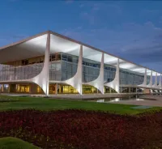

Palais de Planalto


Oscar Niemeyer, né le 15 décemembre 1907 à Rio de JAneiro et disparu en 2012, demeure une figure incoutournable de l'archi tecture moderne
Tout au long de sa vie, Niemeyer a transcendé les conventions avec son approche audacieuse et sa vision avant-gardiste. Sa carrière a été marquée par des collaborations fructueuses, notamment avec Lucio Costa, avec qui il a conçu la ville emblématique de Brasília.
Pionnier du modernisme brésilien, Niemeyer est célèbre pour ses formes organiques, ses courbes fluides et son engagement politique manifeste à travers ses œuvres. Lauréat du Prix Pritzker en 1988, il a également laissé une empreinte internationale, contribuant à des projets emblématiques tels que le siège des Nations Unies à New York.
L'héritage d'Oscar Niemeyer va bien au-delà de l'architecture, représentant une fusion intemporelle entre l'art, la politique et l'innovation qui continue d'inspirer les générations futures.
1936
1952
1970
1974
1986
1996
2003